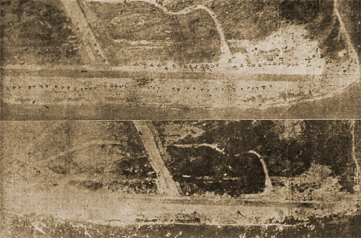

|
j
a v a s c r i p t |
Pg.2/2
November 5, 1944
Tribune: "Enemy losses in Leyte heavy ... 4,500 casualties inflicted on foe by Nippon garrison." On the night of November 2, Japanese flyers pounded the Tacloban and San Pablo airfields, setting afire or heavily damaging "more than 110 planes." Two pictures supposedly show the Tacloban airfield before and after the raid. The "before" shows an improved, wider strip with more than 70 planes, and the "after" shows only four planes. The tip-off is the runway on the second picture — it's muddy, narrower and unimproved. In fact, there isn't a single destroyed or damaged plane in it.

Tacloban Airstrip "Nov. 2-3"
A new box score now totals 352 ships, including 49 carriers, 16 battleships and 30 cruisers. "Horse owners urged to register." That's the way they get you. If necessary, your horse can be "called up" for eight hours of work (overwork, really). The driver gets 300 grams of rice and the horse gets a pound or so of copra meal and hardly any rest. And who's the President of the Manila Horse Owners' Association? Figueras! 0935: A second wave of American planes is overhead on this extremely beautiful day. Forty planes or so hit Camp Murphy and Nielson. There might have been more over the Bay as I saw antiaircraft puffs there. For the most part, batteries close to us were not very active. The Alert sounded at 1100; American planes were back by 1215 and several times thereafter. I was having a haircut in the yard at around 1300 when planes came over from the south. We sat it out bravely (the barber was remarkably cool), but when shrapnel began to fall we dashed for the garage. At 1430, the Bay area was the target. In the early afternoon I witnessed what looked like dive-bombing over Mariveles in formation! As I write this at 1500, American planes just flew over us, but Manila isn't the target. An eyewitness at Camp Murphy said that four Japanese and one American plane were shot down. Another eyewitness in San Juan said that the plane I saw on fire this morning was Japanese. A bizarre story doing the rounds is that an American plane saved a parachutist by picking his chute up with his wing! |
|
|
|
|